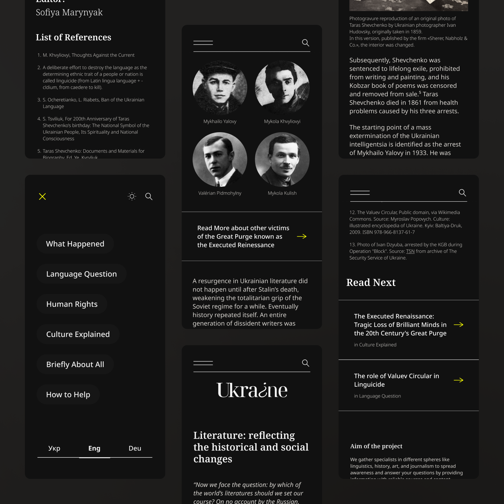
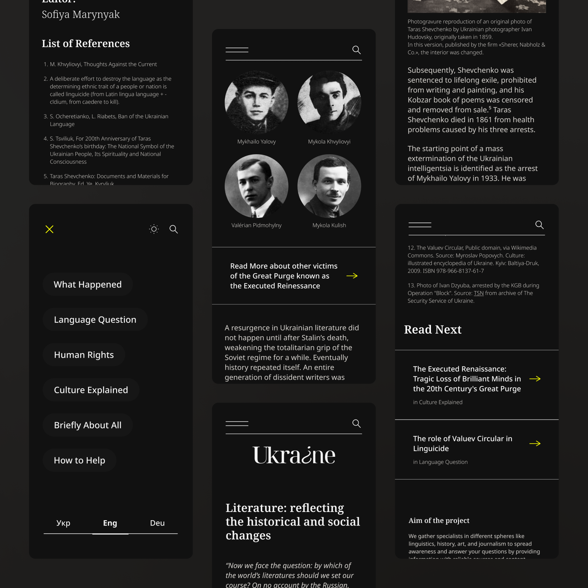

Pet Project
Information-seeking behavior and user patterns
Exploration of encouraging intrinsic user motivation by applying data-informed strategies in designing an educational web project.
Pet Project
Information-seeking behavior and user patterns
Exploration of encouraging intrinsic user motivation by applying data-informed strategies in designing an educational web project.
July 2023 · 5 min read
Background
When designing the project that is sought to raise awareness and resist misinformation, fostering intrinsic motivation is fundamental. That means encouraging users to engage deeply with content out of interest rather than obligation.
By curating well-sourced content and making it available in multiple languages, the website aimed to shift perceptions among key international audiences, and ultimately spark off greater support for Ukraine.
Based on research to identify widespread myths and misinformation, the content should be tailored to debunk these narratives with localized, verifiable information adapted to the concerns of different audiences.
The project goal is to become an open platform for historians, researchers, and journalists to publish their work in a distributable format supported with fact-checking, credible sourcing, and editorial oversight to ensure the reliability.
That’s why my objective was to create an experience that encourages natural information-seeking behavior and user exploration patterns.
 

User Pattern: going down the rabbit hole
Wiki rabbit hole is a learning path that a reader follows by moving from one topic to another through links. This happens when users, initially searching for specific information, end up navigating through multiple interconnected topics, leading to extensive content engagement. Wikipedia and Public Domain Review exemplify this behavior, where users may begin with a single query and find themselves hours later exploring indirectly related subjects.


Casual browsing model
Often called ”‘Don’t know what you need to know”, the model conveys that people sometimes don’t know what they are truly looking for in the beginning of their learning path. They may search for specifics that they believe are the answer, discovering the real solution in something else, or they may browse without a specific goal in mind.
This model of information seeking behaviour is apparent when being persuasive is needed, especially relevant when the user lacks awareness in the topic. One of the prominent examples here would be public health.
Regardless of the field, another instance is word-of-mouth. Initially engaging individuals trusted by the target audience, for example influencers and subject-matter experts, users are prompted to explore the content out of endorsement. In this approach users may get acquainted with the website without knowing why they want to learn about it or what their goal is when browsing it.
Lastly, the model is noticeable when users simply want to stay informed. People often want to keep being up to date on what's happening in a particular field or topic, without looking for a specific answer.


Seamless linking to the relevant article right at the point of mention
Design to support information discovery
Offering concise responses to common queries ensures users quickly find the information they need. For instance, a “Briefly About All” section can summarize key facts while linking to detailed articles.
Incorporating dynamic cross-referencing allows users to seamlessly transition from one topic to another, establishing the rabbit hole effect. This can be achieved through inline references, “Read Next” sections with related articles, and topic-based navigation cues.
Understanding the motivations of different user groups such as activists, influencers, researchers, and educators, allows tailoring content to their interests and existing knowledge gaps, and encourages sharing.
By designing for exploratory behavior and intrinsic motivation, we can create more engaging and impactful educational platforms that not only inform but inspire users to continue learning and raising awareness.
Leading the project to the top 15 hackathon finalists
As the initiator of this project, I had been guiding a multi-disciplinary team of volunteers, shaping vision and direction.
Taking part in the Хататон 4.0: Ukraine Heritage Edition felt like a natural extension of that journey. Aligning our goals with the broader mission of the hackathon, we focused on the “Culture Explained” website section.
I took on the challenge of assembling a small but dedicated team that brought together specialists from diverse backgrounds, such as business and data analysis, front-end development, journalism, research and communications.
I guided our project as a team lead within the intense timeframe of the hackathon. One of the most rewarding aspects was seeing how quickly we adapted and collaborated. Our ability to iterate rapidly, refine our ideas, and incorporate mentorship feedback played a key role in our project making it to the final.
Leading a volunteer-driven project comes with unique challenges such as balancing motivation, sustaining momentum, and ensuring that everyone’s contributions align toward a shared goal. While the initiative ultimately didn’t scale in the way we had hoped, this experience made certain that our efforts were meaningful and left us with valuable takeaways on how to approach similar projects in the future.